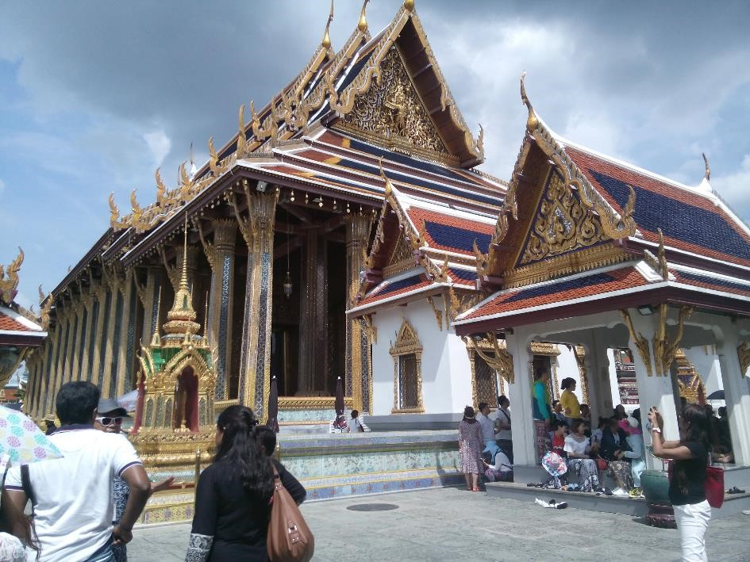

Avis à tous les amateurs d'escapades en sac à dos, la Thaïlande est faite pour vous ! La Thaïlande offre des paysages magnifiques. Si vous souhaitez partir à l'aventure, le nord du pays s'y prête parfaitement : entre nature sauvage et temples bouddhistes xxxx auberges
occurrere bene pertinax miles explicatis ordinibus parans hastisque feriens scuta qui habitus iram pugnantium concitat et dolorem proximos iam gestu terrebat sed eum in certamen alacriter consurgentem revocavere ductores rati intempestivum anceps subire certamen cum haut longe muri distarent, quorum tutela securitas poterat in solido locari cunctorum. Ob haec
et huius modi multa, quae cernebantur in paucis, omnibus timeri sunt coepta. et ne tot malis dissimulatis paulatimque serpentibus acervi crescerent aerumnarum, nobilitatis decreto legati mittuntur: Praetextatus ex urbi praefecto et ex vicario Venustus et ex consulari Minervius oraturi, ne delictis supplicia sint grandiora, neve senator quisquam inusitato et inlicito more tormentis exponeretur. Ergo ego senator inimicus, si ita vultis, homini, amicus esse, sicut semper fui, rei publicae debeo. Quid? si ipsas inimicitias, depono rei publicae causa, quis me tandem iure reprehendet, praesertim cum ego omnium meorum consiliorum atque factorum exempla semper ex summorum hominum consiliis atque factis mihi censuerim petenda. Mensarum enim voragines et varias voluptatum inlecebras, ne longius progrediar, praetermitto illuc transiturus quod quidam per ampla spatia urbis subversasque silices sine periculi metu properantes equos velut publicos signatis quod dicitur calceis agitant, familiarium agmina tamquam praedatorios globos post terga trahentes ne Sannione quidem, ut ait comicus, domi relicto. quos imitatae matronae complures opertis capitibus et basternis per latera civitatis cuncta discurrunt. Et quia Mesopotamiae tractus omnes crebro inquietari sueti praetenturis et stationibus servabantur agrariis, laevorsum flexo itinere Osdroenae subsederat extimas partes, novum parumque aliquando temptatum commentum adgressus. quod si impetrasset, fulminis modo cuncta vastarat. erat autem quod cogitabat huius modi. Montius nos tumore inusitato quodam et novo ut rebellis et maiestati recalcitrantes Augustae per haec quae strepit incusat iratus nimirum quod contumacem praefectum, quid rerum ordo postulat ignorare dissimulantem formidine tenus iusserim custodiri. Et interdum acciderat, ut siquid in penetrali secreto nullo citerioris vitae ministro praesente paterfamilias uxori susurrasset in aurem, velut Amphiarao referente aut Marcio, quondam vatibus inclitis, postridie disceret imperator. ideoque etiam parietes arcanorum soli conscii timebantur. Post hanc adclinis Libano monti Phoenice, regio plena gratiarum et venustatis, urbibus decorata magnis et pulchris; in quibus amoenitate celebritateque nominum Tyros excellit, Sidon et Berytus isdemque pares Emissa et Damascus saeculis condita priscis. Verum ad istam omnem orationem brevis est defensio. Nam quoad aetas M. Caeli dare potuit isti suspicioni locum, fuit primum ipsius pudore, deinde etiam patris diligentia disciplinaque munita. Qui ut huic virilem togam deditšnihil dicam hoc loco de me; tantum sit, quantum vos existimatis; hoc dicam, hunc a patre continuo ad me esse deductum; nemo hunc M. Caelium in illo aetatis flore vidit nisi aut cum patre aut mecum aut in M. Crassi castissima domo, cum artibus honestissimis erudiretur. Nec piget dicere avide magis hanc insulam populum Romanum invasisse quam iuste. Ptolomaeo enim rege foederato nobis et socio ob aerarii nostri angustias iusso sine ulla culpa proscribi ideoque hausto veneno voluntaria morte deleto et tributaria facta est et velut hostiles eius exuviae classi inpositae in urbem advectae sunt per Catonem, nunc repetetur ordo gestorum. Hac ita persuasione reducti intra moenia bellatores obseratis undique portarum aditibus, propugnaculis insistebant et pinnis, congesta undique saxa telaque habentes in promptu, ut si quis se proripuisset interius, multitudine missilium sterneretur et lapidum.